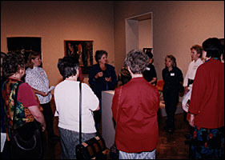

|
Tours |
| 
Free Public Tours–No reservations required Take a tour of the permanent collection or visit a special exhibition. Tours of "China: Fifty Years Inside the People’s Republic" begin December 12. Tours of "The Art of 20th-Century Zen: Paintings and Calligraphy by Japanese Masters" continue several days a week throughout December. For all public tour topics and times, call (612) 870-3131.
Free Public Tours of the permanent collection Take a tour of the permanent collection or visit a special exhibition. No reservations required. For all public tour times and topics, call (612) 870-3131.
Ulrich Architecture and Design Gallery Tour Explore the new Ulrich Architecture and Design Gallery, including a visit to the special exhibition "John Howe in Minnesota: The Prairie School Legacy of Frank Lloyd Wright."
Custom-designed Tours Request a tour based on almost any topic for a group of 10 or more. Touch tours available for visitors who are blind or have low vision. Interpreted tours given for visitors who are deaf or hard of hearing. Call (612) 870-3140 at least four weeks in advance.
Interpreted Public Tours for Visitors who are Deaf or Hard of Hearing Thursday, December 7
Teacher Tour Thursday, December 7, 4:30 P.M.
Africa and China In Focus Explore the Institute's collections of African and Chinese art. Tours of each collection Thursday evenings, Saturdays, and Sundays. No reservations are necessary. Handle and discuss objects on the African and Chinese Art Carts. Call (612) 870-3131 for times.
Purcell-Cutts House Open Days Visit one of the most significant examples of Prairie School architecture in the country. Call (612) 870-3131 to reserve.
Purcell-Cutts House Holiday Tours The Purcell-Cutts House decorated for the holidays. Tours offered hourly, Saturdays and Sundays, beginning November 25, through January 2, 2001. Saturdays, 10:30 a.m.–3:30 p.m. and Sundays 12:30–3:30 p.m. All tours leave by shuttle from the Institute. Call (612) 870-3131 for reservations. Sutdents and seniors, $4; nonmembers $5.
Holiday Traditions in the Period Rooms Period Room Tours offered several times per day, Tuesdays through Sundays, starting November 24 through January 2, 20001. Call (612) 870-3131 for times. Send us your comments. |